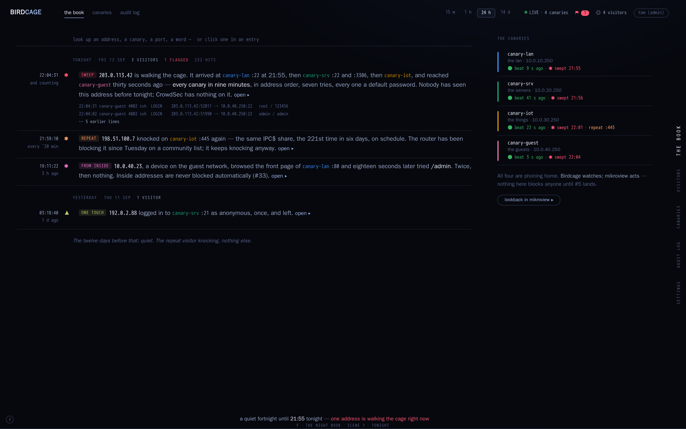
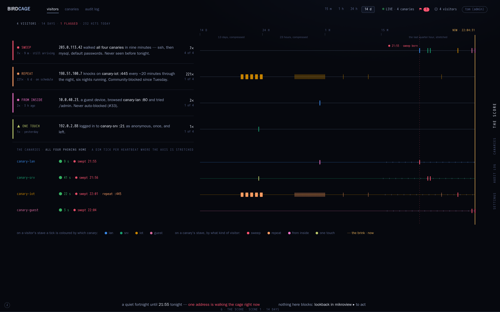

Two twists on the docket (round 2, E), keeping mikroview's essence — free chrome on the void, colour as meaning, sentences as interface, the brink as "now" — without re-using its charts. Same night as before: four canaries, one sweep across all of them 21:55–22:04 from 203.0.113.42, a six-night smb repeat visitor, a guest device poking from inside, one ftp touch yesterday.
Verdict 2026-09-12: the score preferred, the night book dropped. Round 4 reworks the score around the quiet state — zero activity on every canary is the successful result: round 4.
No table, no chart. The night is written as a log book: one entry per visitor, newest first, a kind chip, a sentence of evidence, the raw lines under it, gaps written as words. Looking something up rewrites the book to only its entries. The canaries keep a roll on the right.

the book (landing, tonight) ▸ looked up 203.0.113.42 ▸ the sweep entry opened ▸The docket rows keep their stripe and sentence; each row also owns a stave on one shared time axis that stretches the last quarter hour and squeezes the fortnight. A tick on a visitor's stave is coloured by the canary it touched; a tick on a canary's stave by the kind of visitor. Opening the sweep splits its stave into one line per canary.

the score (landing, 14 days) ▸ 203.0.113.42, the last hour, words under every tick ▸ the sweep opened in place ▸